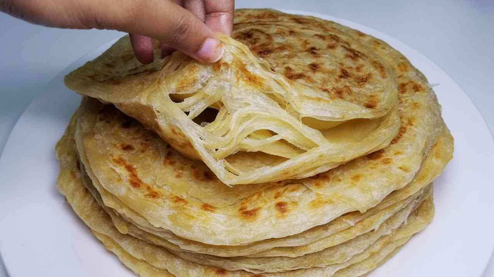

Chapati recipe

Recipe
- 3 cups of flour
- 1 1/2 cups of warm water
- 1 tsp of salt
- 1 tsp of sugar
- Extra rapsolja or any vegetable oil for frying
Step by step directions
- Add 3 cups of flour in a bowl.
- 2. Add salt, sugar, 2 tbsp of oil and 1 ½ cups of water in a separate jar/ bowl.
Stir until the salt and sugar dissolves.
- Add the liquid mixture in step 2 in the flour bowl (step 1) and mix well.
- Keep kneading for 10 minutes and add flour if needed until the dough becomes
non-sticky. Add 2-3 tbsp of oil and continue kneading until the oil mixes well
and the dough is soft. Cover the dough and leave it for 40 minutes.
- After the 40 minutes, divide the dough into 10 - 15 equal parts making ball
like shapes. Arrange them in a flat surface dusted with flour(Cover with a damp
tablecloth to avoid drying).
- Dust flour in the flat place and take one of the balls and start rolling with
a rolling pin to a circular shape, brush oil on top and roll it inwards to form
a shape-like a rope, then create a coil-like shape and press the ball down with
your palm to make it flat. Repeat this process to the rest of the remaining
balls of dough.
- Next, start rolling each of the coil-like shape doughs with the rolling pin
to form a circular shape again.
- In a hot pan, place the rolled out circular chapati and fry each side with
little oil until its golden brown on medium heat. Place your cooked chapati in a
flat plat and cover with an aluminum foil.
- Repeat this step to the rest of the coil-like dough.
- Serve with your favourite stew
Back to top
Back to menu